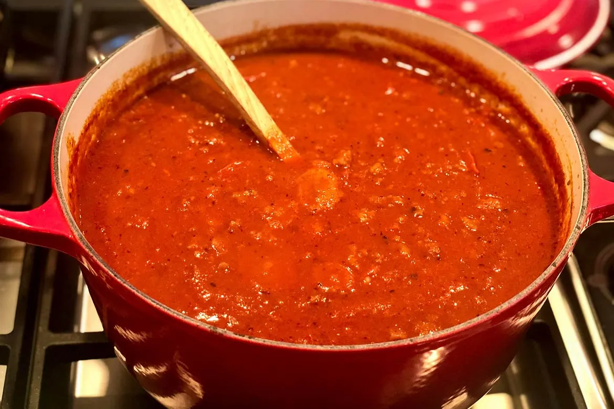

Spaghetti Meat Sauce

Delicious Rich Spaghetti Sauce
This slow simmered spaghetti meat sauce will become your new go to for weeknight dinners.
One pot and a simple prep means you can set it and forget it while cooking. It also makes a great
freezer meal as the sauce can be frozen for up to 3 months and reheated whenever you need it.
Ingredients
- 2 tblspn olive oil
- 1 large carrot
- 1 medium yellow onion
- 1 stick of celary
- 2 pressed garlic cloves
- 2 tablespoons tomato paste
- 1 can crushed tomatos
- one can diced tomatos
- 2 bay leaves
- 1 tsp dried basil
- 1 tsp dried oregano
- 2 cups of chicken or beef broth
- 1/2 cup red wine
- 1/2 tbspn soy sauce
- salt and pepper to taste
Instructions
- Dice all veggies into small pieces
- In a large pot over medium heat pour in 1 tablespoon of olive oil and allow to warm
- Add diced veggies into pot and cook until softened and onions are translucent.
- Add garlic to the pot and cook until fragrant
- Deglaze pot with red wine and allow alcohol to cook off for about 5 minutes
- Now add both cans of tomatoes, dried herbs, bay leaves, salt & pepper, and soysauce to the pot. Give the sauce a good mix and then lower heat to a simmer
- Allow sauce to simmer for 40 minutes up to 3 hours. Add water if sauce gets too thick.
- Pour over pasta shape of your choice and enjoy!